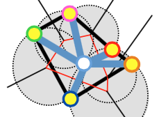

SepMe: 2002 New Visual Separation Measures


Venue. PacificVis (2016)
Abstract. Our goal is to accurately model human class separation judgements in color-coded scatterplots. Towards this goal, we propose a set of 2002 visual separation measures, by systematically combining 17 neighborhood graphs and 14 class purity functions, with different parameterizations. Using a Machine Learning framework, we evaluate these measures based on how well they predict human separation judgements. We found that more than 58% of the 2002 new measures outperform the best state-of-the-art Distance Consistency (DSC) measure. Among the 2002, the best measure is the average proportion of same-class neighbors among the 0.35-Observable Neighbors of each point of the target class (short GONG 0.35 DIR CPT), with a prediction accuracy of 92.9%, which is 11.7% better than DSC. We also discuss alternative, well-performing measures and give guidelines when to use which.
Link to this page: